01 / TIMINGIt hears a pause.
It hears a pause.
You weren’t finished.
Interruptions, silence, and overlapping speech.
It talks over people. It misses corrections. It sounds robotic.
A smooth voice can hide a broken conversation.
Find the failures your product needs to handle.

Interruptions, silence, and overlapping speech.
Changed values, ambiguous answers, and repairs.
Background voices, devices, and noisy audio.
Start with one area. Open its page for the specific problems, risks, solutions, and tests.
Each segment shows its impact on the live conversation and on data or workflows processed after the call.
Live-call impact covers interruption, confusion, frustration, trust, and task completion while the caller is present. Post-call risk covers incorrect or incomplete data, attribution, records, or workflow outcomes that may need downstream review. “Direct” means a central failure pattern in the segment; “possible” means it depends on the behavior and workflow. These flags describe impact, not when every fix should be applied.
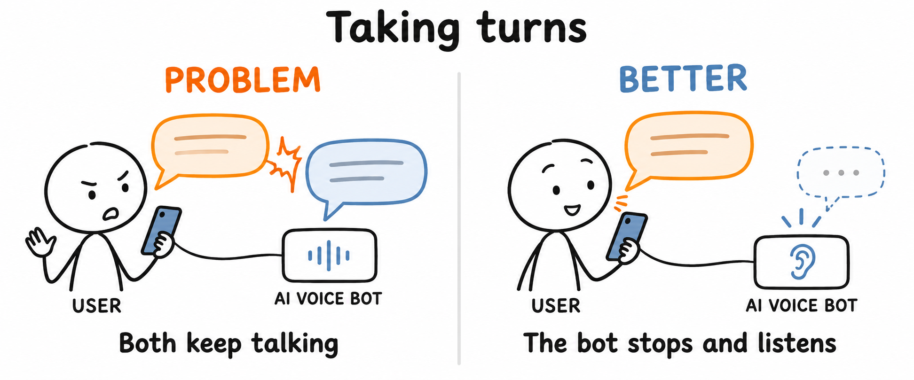
Interruptions, overlap, and timing failures that make the bot lose the conversation.
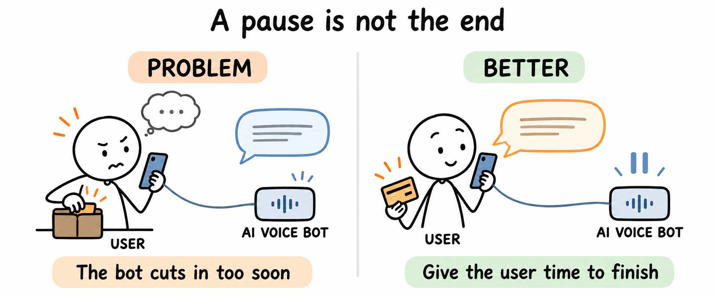
Thinking, lookup pauses, and unfinished answers mistaken for the end of a turn.
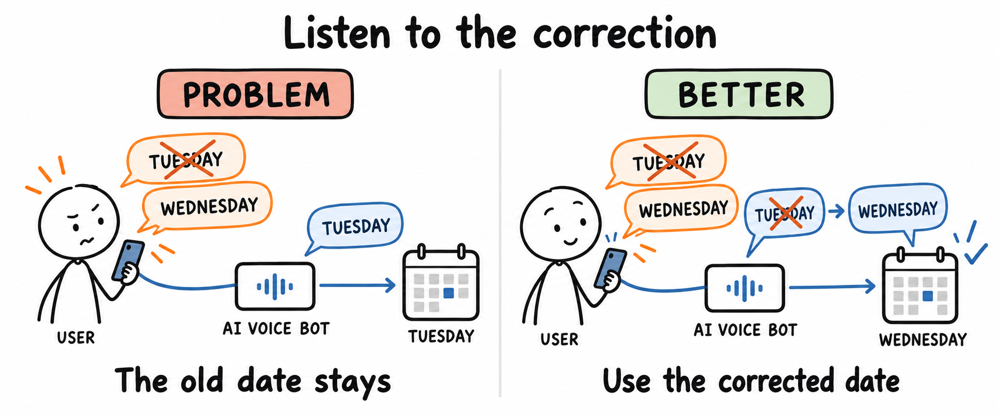
Corrections and restarts that leave the bot acting on the wrong value or intent.
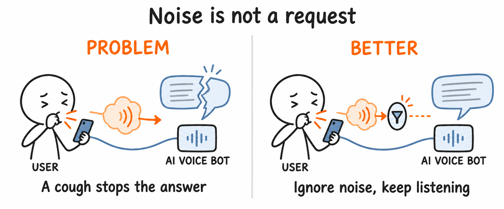
Coughs, laughter, and everyday noise that trigger false speech events.
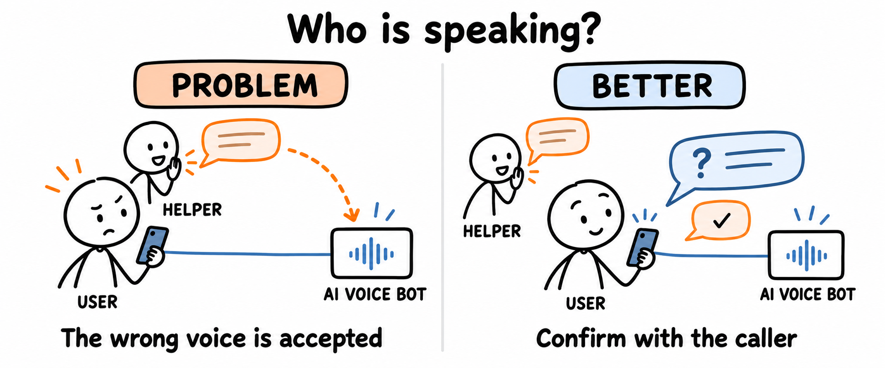
Other voices mistaken for instructions from the authorized caller.
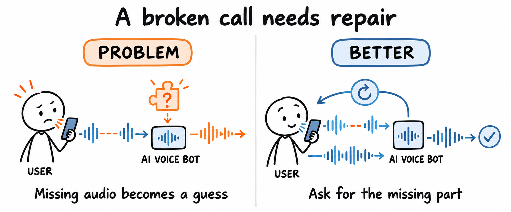
Echo, broken audio, keypads, and automated systems that disrupt real calls.
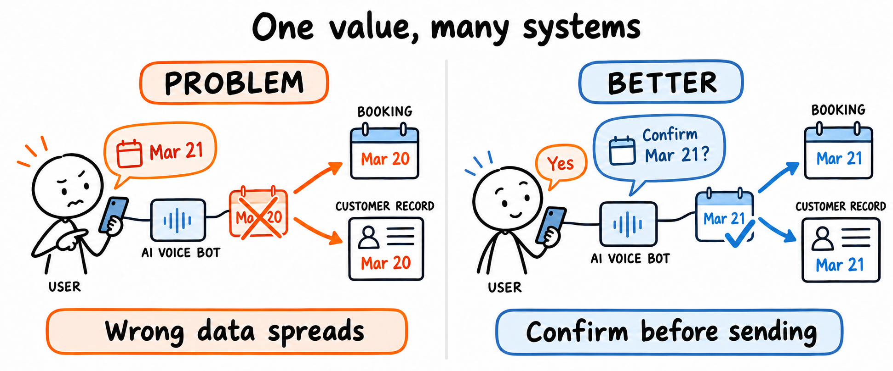
Names, dates, amounts, and identifiers captured or corrected incorrectly.
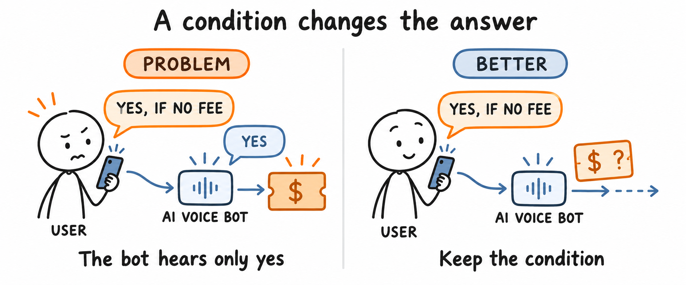
Changed intentions, conditional answers, and requests the bot fails to follow.
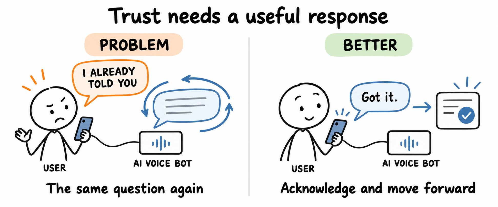
Frustration, distress, and privacy concerns the bot fails to respond to.
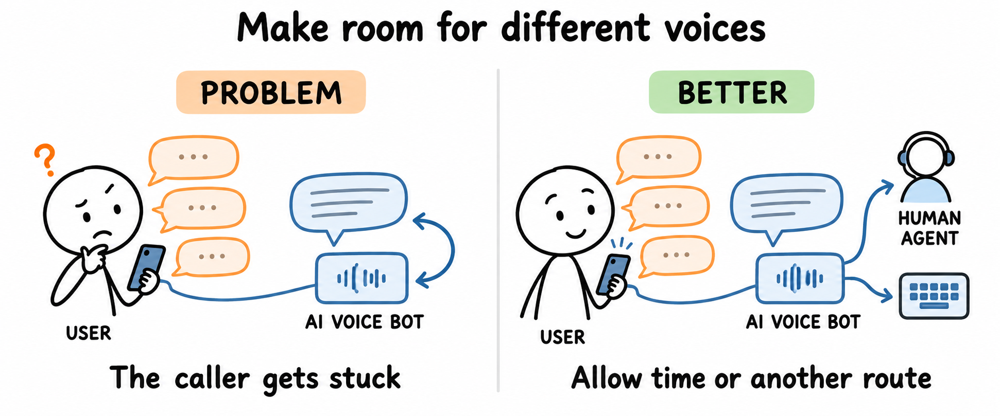
Different accents, voices, and speaking patterns the bot struggles to support.
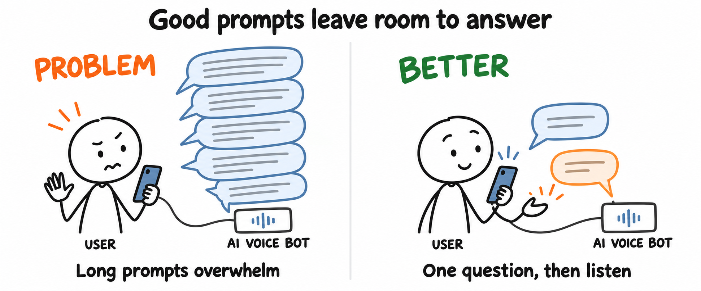
Long prompts, delays, and rigid questions that create the caller’s frustration.
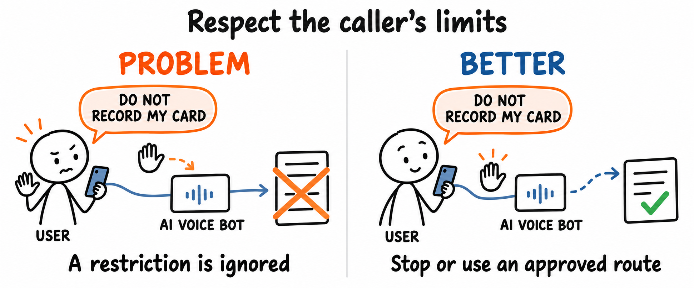
Permission, refusal, sensitive data, and escalation boundaries the bot misses.